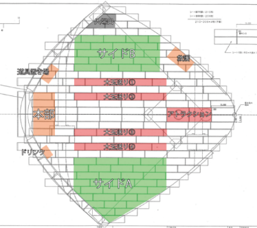
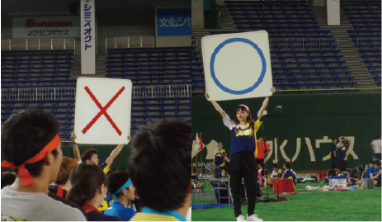

種目場所
体を動かす競技は少ないけどスポフェス でしかできない競技やアトラクション種目、 サイド種目を紹介します。
電子学園ウルトラクイズ
〇×クイズ、早押しクイズ、三択クイズ など様々な形式がある。クイズ形式に よっては運、体力も必要となり、知力 だけでは勝ち進むことができないことも。
色別対抗大玉送り

スタート位置から一定の距離に 転回点を作って大玉をスタート位置 から転回点を通ってゴールにいかに 早くつけるかを競う競技。
色別対抗玉入れ

一定の離れた距離にあるかごに球を 入れて数を競う競技。 また、公式競技もあり、通常とは ルールが違い、100個のお手玉を いかに早くかごに入れるかをきそう 競技となっているものもあるそうですよ
アトラクション競技
- ストラックアウト
- 3×3の1～9の的に球を投げて いくつ的を抜くことができるかを 競う競技です。
- スピードガン
- 投げたボールの速さを競う競技です。
サイド種目
- 謎解き
- 東京ドームの売店通路を利用して行う謎解き競技。3人チームでの参加になります。解答には「スクワットの回数で答える」など筋力・体力も必要になります。
- 体力測定
- ①握力測定、②上体起こし、③長座体前屈、④垂直飛び、 ⑤立ち幅跳び、⑥プランクを測定し、自身の耐力レベルを 知ることができます。
- ショートダッシュ
- レース毎に最速を決める 30mショートダッシュ。
こんな楽しみ方もどうですか？
仮装をして写真を撮って「＃スポフェス2022」で インスタグラムに投稿してスポフェスを盛り上げよう
友達とおそろいのものを 身につけてより仲良くなれるかも。
同じチームの人たちを応援して他学年・他学科と交流しよう。